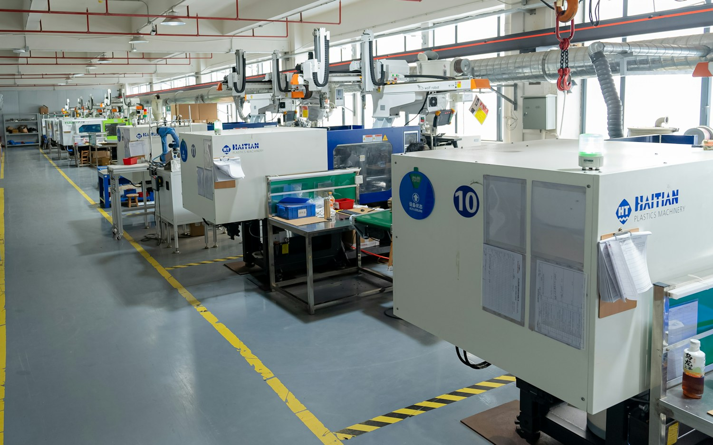

DADOS, MÁQUINAS E DECISÕES EM LINHA
Enxergue o consumo
onde ele acontece.
A Linear relaciona energia e produção para mostrar como máquinas, setores e processos se comportam — e onde vale investigar.
A conta fecha o mês.
Não explica a operação.
O total consumido mostra o tamanho do gasto. Para entender uma mudança, é preciso descer até o setor, o equipamento e o momento em que ela começou.
Exemplo de leitura com valores demonstrativos.
DO TOTAL AO DETALHE
Do panorama da planta
ao detalhe do ativo.
Parta do consumo total, identifique o setor, compare máquinas e localize desvios. Cada visão aprofunda a mesma operação.
Da planta ao setor
| Ativo | Setor | Energia |
|---|---|---|
| Injetora 04 | Produção A | 8,6 MWh |
| Compressor 02 | Utilidades | 6,2 MWh |
| Extrusora 01 | Produção B | 5,7 MWh |
| Injetora 02 | Produção A | 4,9 MWh |
Consumo no período · maior participação no setor
Uma mudança de comportamento, com endereço.
O sinal aponta quando o padrão mudou e qual ativo merece investigação. A equipe mantém o contexto de setor e turno.
O dado tem endereço.
Máquina, setor e processo.
Dois equipamentos podem trabalhar lado a lado e consumir de formas muito diferentes. Uma leitura útil precisa preservar a relação entre carga elétrica e operação real.

CONVERSE COM A LINEAR
Os dados já existem na operação.
Vamos entender o que falta enxergar.
Uma conversa sobre consumo, produção e os pontos que sua equipe ainda precisa investigar manualmente.
Preparar conversaO canal corporativo está em definição. Este botão abre um rascunho sem destinatário.